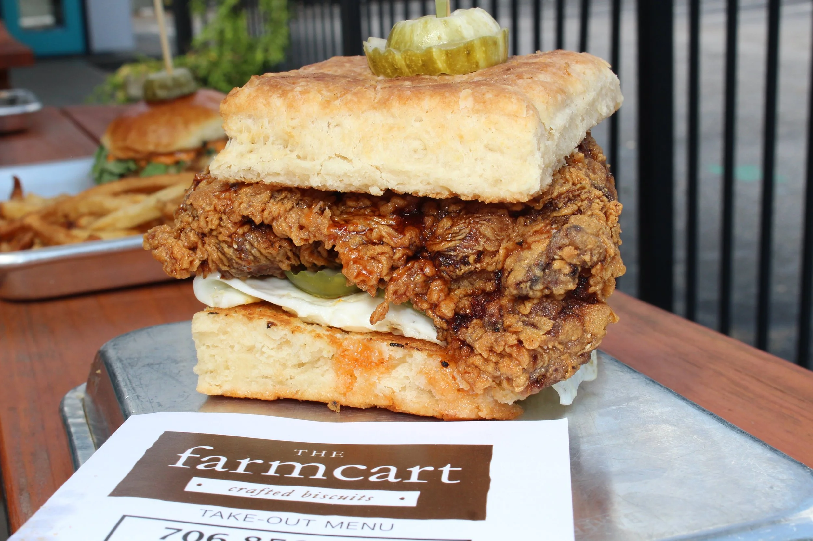
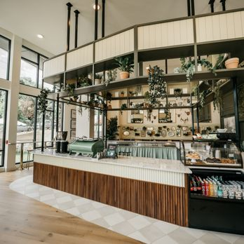
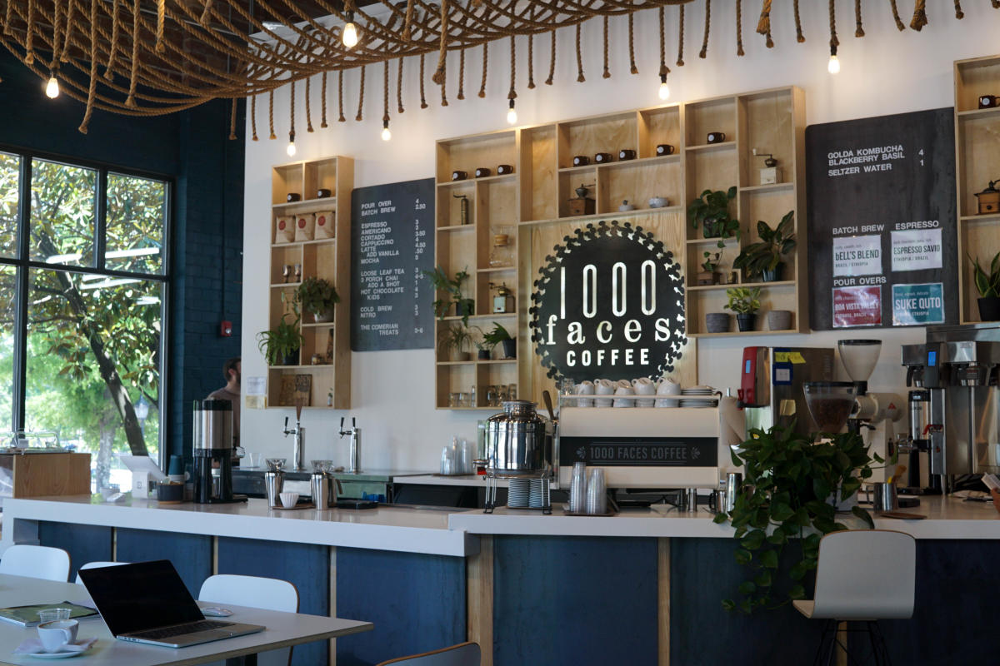
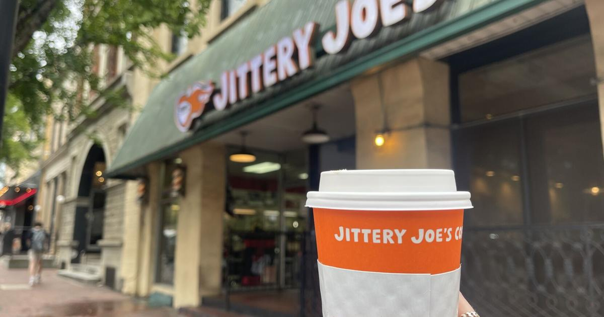

The Farm Cart is home to the best biscuits in Athens! My favorite to get is the 'the farmer' with a lavender chai to drink.

Address:
Phone:
Daydreamer cafe is a great place to stop by for a matcha! The atmososphere is very cozy and a great place to hang out with your friends or do homework.

Address:
Phone:
1000 Faces has the best seasonal drinks! The community is very welcoming and the atmosphere is great for studying or reading.

Jittery Joe's is an Athens staple. You can find them anywhere is be assured your drink is going to be good. I love the vanilla chai with an apple cinnamon muffin to go along with it.
